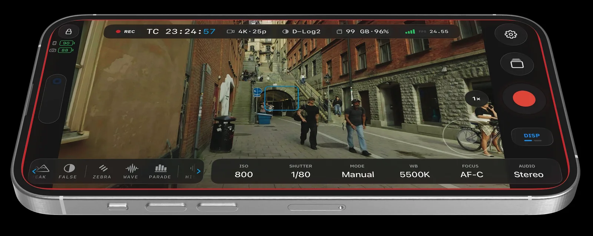
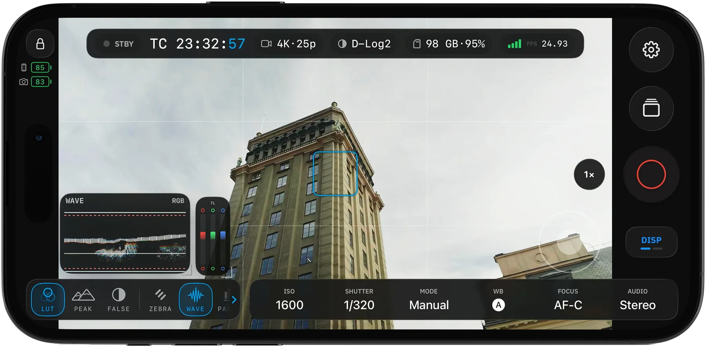
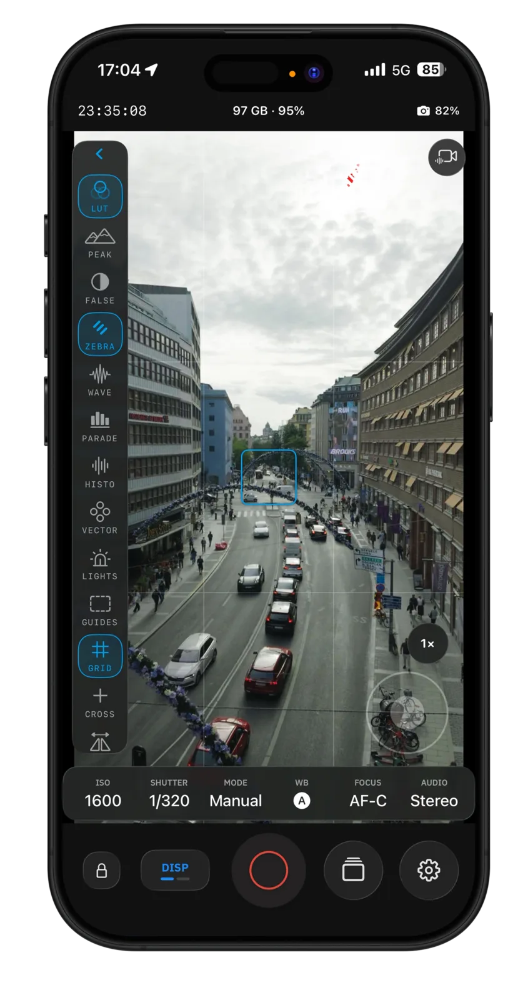
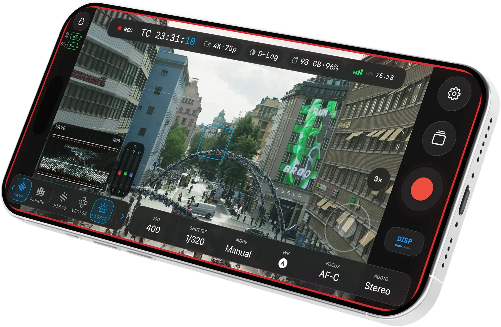

The open field
monitor for Osmo Pocket.
Pair over Bluetooth, join the camera's Wi-Fi, and watch a live HEVC (or AVC) feed with professional scopes and assists. Free, Apache-2.0, no vendor SDK.

Every scope. Every assist. Camera control. Free, and open source.
Read the image like a colorist.
Waveform, RGB parade, histogram, and vectorscope run live beside the image you are judging, with Traffic Lights on the feed.

Catch it before the take.
False color, zebras, Traffic Lights, peaking, grids, and crosshairs sit on a rail next to the image — including in portrait.

Keep the camera in the rig.
Pair over Bluetooth, join the camera's Wi-Fi, then set ISO, EV, zoom, gimbal, and record from the phone on your cage.

No subscriptions, no telemetry.
OpenPocketCine is Apache-2.0 licensed and built in public with the latest frontier models — Grok, Codex, and Claude. Inspect the protocol core, improve the monitor, and keep the tool you rely on.
This project is not affiliated with DJI. Verify record start/stop on the camera body until you trust the link.
Osmosis
I learned the BLE pairing and camera Wi-Fi connection path with the help of Osmosis by Konrad Iturbe — a generous open Android client for Osmo cameras. I'm grateful. OpenPocketCine is its own implementation; Osmosis was inspiration for that connection story, not a source I copied.
Please go look at Osmosis too. If you care about talking to Osmo cameras, Konrad's work is worth your time.
OpenZCine
The field-monitor architecture follows OpenZCine.